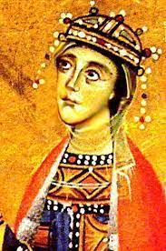
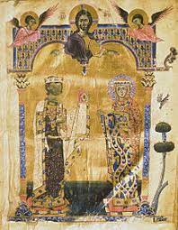

Հիմնական մաս ՝
Կիլիկյան Հայաստանի գահին Զապել թագուհու արժանավոր հաջորդը եղավ նրա որդի Լևոն III(II)–ի կինը` Աննա (Կեռան) թագուհին, որ մեր պատմության մեջ, ի թիվս այլ արժանիքների, հիշատակվում է իբրև ամենաբազմազավակ հայ թագուհի… Հին ու միջին դարերի պատմությունը լի է բազմաթիվ դրվագներով, երբ երկրների կամ թագավորական ու նախարարական տների միջև կնքվող հաշտությունն ամրապնդվում է խնամիական կապերի հաստատումով: Կիլիկյան Հայաստանում իշխող Ռուբինյանների և Հեթումյանների (որոնք ունեին բյուզանդամետ կողմնորոշում) վերջնական հաշտությունը կայացավ Զապելի և Հեթում I–ի ամուսնությամբ, ինչի արդյունքում 1226 թ. Հեթումյանները դարձան արքայատոհմ։ Որոշ ժամանակ անց պառակտում առաջացավ Հեթումյանների երկու ճյուղերի միջև: Հակադրվելով Հեթում I արքային` Լամբրոն ամրոցի տեր Կոստանդինը և նրա որդի Հեթումը 1250 թ. անցան Կիլիկիա ներխուժած Իկոնիայի սելջուկյան սուլթանության զորքերի կողմը: Դավաճանության համար նրանք մահապաժի ենթարկվեցին, ինչն ավելի խորացրեց ներտոհմական պառակտումը: Միջազգային դրությունը, սակայն, գնալով բարդանում էր. 1250 թ. Եգիպտոսում իշխանության եկած մամլուքները 1260 թ. հաղթելով Կիլիկյան Հայաստանի դաշնակից մոնղոլներին, գրավել էին Սիրիան և սպառնում էին հայկական պետականությանը: Այդ պայմաններում արքայատոհ- մի պառակտումը վերացնելու նպատակով Հեթում I–ն իր գահաժառանգ որդի Լևոնին 1262 թ. ամուսնացնում է մահապատժի ենթարկված Հեթումի դուստր Աննայի հետ, որին, ընտանիքի հունասեր ավանդույթի համաձայն, կոչում էին «Կիռ Աննա» («Տիրուհի Աննա»)։ Հայկական սկզբնաղբյուրներում նա ավելի հայտնի դարձավ «Կիռ Աննա»–ի հայկականացված տարբերակով` «Կեռան»: Արքայատոհմում հաշտությունը կայացավ. ի նշանավորումն կարևոր այդ իրադարձության` Ավետարան պատվիրվեց բոլոր ժամանակների ամենատաղանդավոր մանրանկարիչներից մեկին՝ Թորոս Ռոսլինին։ 1262 թ. Հռոմկլայի կաթողիկոսարանում պատրաստված Ավետարանում (Երուսաղեմի Սբ Հակոբյանց վանքի մատենադարան, ձեռագիր բացառիկ և մեծարժեք մանրանկարների կողքին պահպանվել է թագաժառանգ Լևոնի և Կեռանի մանրանկարը:1270 թ. Հեթում I արքան որոշեց խաղաղությամբ անցկացնել իր փոթորկահույզ կյանքի վերջին շրջանը: Նա գահաժառանգ Լևոնին հռչակեց թագավոր, իսկ ինքն աշխարհաթող եղավ «եղբայր Մակար» հոգևոր մականունով` մտնելով վանք: Գահ բարձրացան Լևոն III (II)–ը և Կեռան թագուհին: Նախքան արքայական գահ բարձրանալը Կեռան իշխանուհին տարել է շատ ծանր մի փորձություն` կապված կողակցի հետ։ 1266 թվականին եգիպտական մամլուքները ներխուժեցին Կիլիկիա։ Հեթում I–ը մեկնել էր Պարսկաստան` մոնղոլ առաջնորդ Իլ–Խանատից օգնություն բերելու: Հայոց զորքը գլխավորում էին արքայորդիները` գահաժառանգ Լևոնն ու Թորոսը։ Մառիի ճակատամարտում հայերը պարտվեցին. Թորոսը սպանվեց, իսկ Լևոնը գերի ընկավ։ Հեթում I–ը ստիպված էր մի քանի ամրոցներ զիջելով և մեծ փրկագին վճարելով` գերությունից ազատել գահաժառանգ Լևոնին։ Դա կատարվեց գահաժառանգ Լևոնի և Կեռանի ամուսնությունից ընդամենը չորս տարի անց… Իբրև թագուհի` Կեռանն իր նախորդի նման աչքի ընկավ մեծ բարեգործություններով, երկրի ու ժողովրդի չէ ժամանակակիցների` նրան տրված բնորոշումը` դի հանդեպ հատուկ հոգածությամբ: Պատահական «մեծափառ Կեռան թագուհին»… Հայկական ձեռագրերի հիշատակարաններում թագուհին բազմիցս մեծարանքով է հիշվում իբրև ու մշակույթի հովանավոր, ձեռագրերի գիտության պատվիրատու: 1274 թ. թագուհին Ստեփանոս գրիչին պատվիրում է արտագրել և կազմել նշանավոր մատենագիր Վարդան Արևելցու աստվածաբանական գործերի ձեռագիր ժողովածուն՝ կցելով մի քանի հիշատակարաններ, այդ թվում նաև իր հիշատակարանը: Ուշագրավ է, որ թագուհին ձգտել է թագավորության և արքայական ընտանիքի համար կարևոր իրադարձություններն անմահացնել նոր ձեռագիր մատյաններ պատվիրելով: լևոն III(II)–ի թագադրության առթիվ Կեռան թագուհին պատվիրում է մայրաքաղաք Սիսում ընդօրինակել Ավետարան, որն ավարտվում է 1272 թ. և նրա անունով գիտության մեջ կոչվում է «Կեռան թագուհու ավետարան» (Երուսաղեմի Սբ Հակոբյանց վանքի մատենադարան, ձեռագիր N 2563): Ավետարան Իրանը նվիրվել է Ակների նշանավոր վանքին, ուր հանգչում էր նաև Կիլիկիո թագավորության հիմնադիր Լևոն Մեծագործի սիրտը… Համաշխարհային արվեստի գլուխգործոց այս Ավետարանում (որի նկարչի անունն անհայտ է) պահպանվել է նաև արքայական ընտանիքի մանրանկարը, որում ներկայացված են Լևոն III(II)-ը և Կեռանը` իրենց հինգ զավակների հետ։ Արքայական ընտանիքը երկրպագում է Հիսուս Քրիստոսին, որի աջում Մարիամ Աստվածածինն է, ձախում` Հովհաննես Մկրտիչը: Փաստորեն, Կեռանը միակ Հայոց թագուհին է, որից պահպանվել է երկու դիմանկար. մեկը` նկարված 1262 թվականին (հեղինակ` Թորոս Ռոսլին), երկրորդը` 1272 թվականին։ Մեկ այլ ձեռագիր Կեռան թագուհին պատվիրել է իր ավագ որդի, գահաժառանգ Հեթումի ասպետության հայկական զինվորական աստիճան ստանալու առթիվ: Թագուհու պատվերով 1283 թվականին Սկևռայում ընդօրինակվել է մեկ այլ Ավետարան` նույն- պես բացառիկ մանրանկարներով այն այսօր պահվում է Երևանի Մեսրոպ Մաշտոցի անվան Մատենադարանում: Կեռան թագուհին ամենաբազմազավակ Հայոց թագուհին է: Լևոն III(II)–ը և Կեռան թագուհին, համատեղ ապրելով 23 տարի, ունեցան 15 երեխա` 8 որդի և 7 դուստր (Ղ․ Ալիշանի կարծիքով կարող էր ծնված լինել նաև 16–րդ զավակը): Հերոսուհի մայրը ծննդաբերություններից երեքի ժամանակ ունեցել է երկվորյակ զավակներ։ Լևոն III(II)–ի և Կեռան թագուհու որդիներից հինգը` Հեթում II–ը, Թորոս III(I)–ը, Սմբատը, Կոստանդին II(I)–ը, Օշինը, թոռներից երեքը` Թորոս III(I)–ի որդի Լևոն IV(III)–ը, Զաբելի որդի Գիդը Լուսինյանը դարձել են Կիլիկիո թագավորներ Լևոն III(II)–ի մահվանից (1289 թ.) մինչև 1344 թվականը: Նրանց դուստր Ռիթան ամուսնացավ Միքայել VIII Պալեոլոգի հետ` դառնալով Բյուզանդիայի կայսրուհի: Իսկ Կիլիկիո վերջին արքա Լևոն VI(V)–ը նրանց թոռնորդին էր… Լևոն VI(V)–ի մահից հետո «Հայոց թագավոր» և «Հայոց թագուհի» տիտղոսներն անցան Կիպրոսի Լուսինյաններին, իսկ ավելի ուշ` Սավոյան արքայատանը, որը մինչև 1946 թ. իշխում էր Իտալիայում` կրելով նաև տիտղոսը։ Նշված արքայատները, սակայն, կրում էին միայն տիտղոսները` առանց որևէ իրական իշխանության հայոց երկրի կամ հայ ժողովրդի նկատմամբ:
Եզրակացություն ՝
Նա եղել էր Լևոն III(II)–ի կինը։ Ունեցել է 15 երեխա ՝ 8 որդի և 7 դուստր։ Ստացել է իր ամուսնու հետ «Հայոց թագավոր» և «Հայոց թագուհի» տիտղոսներ։

